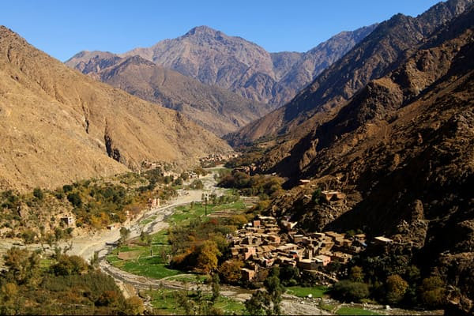

Excursion vallée de L'Ourika
Un tour dans la vallée de l’Ourika et ses 7 cascades en une journée avec une randonné facile au pied de l’Atlas et au bord de la rivière de Sitti-Fatma.
Excursion vallée de L'Ourika depuis Marrakech
- Excursion à la vallée d'Ourika (1jour)
Détails de l'excursion
Trajet : 60 Km ( 1 h de route )
Programme de l’excursion :
- Départ depuis votre hôtel à 08 h 30
- Visite du souk hebdomadaire de Tnin Ourika ( Organisé chaque lundi )
- Visite de la vallée de l’Ourika.
- Découverte des cascades de l’Ourika.
- Possibilité de visiter une pharmacie berbère.
- Retour à Marrakech à 17 h.
Prix inclut : Transport en privé, assurances des passagers et frais du chauffeur.
Prix n’inclut pas : Repas, boissons et activités en extra.
N.B: Si votre hébergement est situé à plus de 15 km du centre de Marrakech veuillez prévoir un supplément pour la mise en place du transport à votre adresse
Excursion vallée de L'Ourika
| Vehicule | Tarif | |
|---|---|---|
| Minibus 04 places | 75 Euro | Reserver |
| Minibus 07 places | 90 Euro | Reserver |
| Minibus 14 places | 135 Euro | Reserver |
| Minibus 17 places | 145 Euro | Reserver |
| Autocar 29 places | ND | |
| Autocar 48 places | ND |
Tarif par vehicule, et non par personne. Assurance des passagers et frais du chauffeur compris.
Trajet vallée de L'Ourika
Excursion d'une journée dans la vallée de l'Ourika depuis Marrakech
Excursion dans la vallée de l’Ourika au départ de Marrakech est une balade dans l’une des plus belle vallées de l’Atlas, située à 60 Km de Marrakech et à une heure de route ; la vallée de l’Ourika et ses 7 cascades offre un refuge relaxant tant pour les marrakchis que pour les touristes qui désirent s’éloigner de la foule et les embouteillages de la ville, une nature verdoyante embellie par les montagnes pourpres de la vallée et l’écoulement doux et paisible de sa rivière; composant ainsi un chef-d’œuvre qui restera gravé dans vos souvenirs de vacances.
Sur-place, vous pouvez faire une randonnée légère pour découvrir les belles cascades de la vallée, admirer la beauté des maisons berbères bâties au pied de la montagne, déguster un bon tajine marocain au bord de la rivière, faire une balade à dos de mulets ou dromadaire ..
La vallée de l’Ourika et ses 7 cascades
Considérée relativement préservée par rapport au reste de la région de Marrakech, la vallée de l’Ourika débute à 30 km de la ville de Marrakech sur un chemin limité à sa fin par le douar de Setti-Fatma dernier point accessible en voiture, le village a pu sauvegarder un mode de vie montagnard traditionnel durant des décennies offrant ainsi un panorama de rêves pour les amateurs de grande nature.
La vallée est connue par sa flore verdoyante et sa belle rivière transparente, grâce à son altitude et son emplacement entre les montagnes de l’atlas cette région est considérablement plus fraiche et douce par rapport au climat chaud de Marrakech durant les mois de l’été, expliquant ainsi les grandes de masses de touristes marocains et étrangers qui choisissent cette destination pour y passer une belle journée.
Pourquoi une excursion à l’Ourika est très recommandée :
En optant pour notre formule excursion Ourika depuis Marrakech en privé organisée tous les jours vous aurez la possibilité de profitez de plusieurs visites en même temps :
- Lors de votre excursion Ourika depuis Marrakech vous pouvez faire un tour dans souk de Tnin Ourika hebdomadaire et traditionnel organisé chaque lundi permettant aux villageois de la région de se réunir pour vendre leurs récoltes en fruits et légumes.
- Au long du trajet Marrakech Ourika vous aurez l'occasion d'admirer la beauté des montagnes de l’Atlas, les petites plantations verdoyantes au bord de la rivière et prendre en photos les maisons berbères accrochées dans la montagne.
- Une fois au bout de la vallée de l’Ourika une petite randonnée pour monter dans la montagne et arriver aux premières cascades de l’Ourika , sur-place des habitants vous proposeront un déjeuner typiquement marocain à base de légumes frais récoltés le même jour.
- Vous aurez également l’occasion de visiter lors d’une excursion Ourika au départ de Marrakech une pharmacie berbère ou un jardin biologique composé de plantes médicinales et aromatiques.
Tweet this article
Nous vous garantissons
- Un véhicule récent et climatisé à votre disposition en exclusivité
- Départ et retour à votre hôtel gratuitement dans un rayon de 15 km
- Liberté de modifier ou décaler les horaires du départ et de fin de votre balade
- Possibilité de personnaliser l'itinéraire de l'excursion et les sites à visiter
- Trans Marrakech vous garantie les prix les moins chers